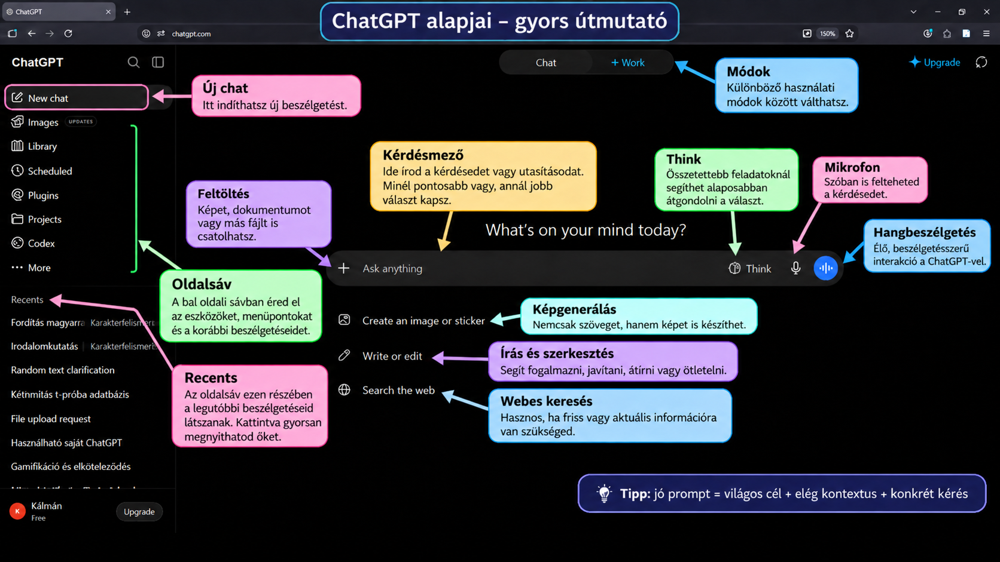

3 ChatGPT
Frissítve: 2026. szeptember 10.
3.1 Mit nyújthat a ChatGPT egy pszichológusnak?
A ChatGPT egy általános célú MI-asszisztens, amely szöveggel, képekkel, fájlokkal és – a csomagtól függően – webes információkkal is tud dolgozni. Pszichológushallgatóként és később szakemberként elsősorban gondolkodási, tanulási és munkaszervezési segédeszközként érdemes rá tekinteni.
Használható például fogalmak és elméletek elmagyarázására, vizsgafelkészülésre, szakirodalmi tájékozódásra, kutatási kérdések finomítására, kérdőív- vagy interjúötletek megvitatására, szövegek javítására, adatok értelmezésének támogatására, prezentációk és ábrák tervezésére, illetve gyakorló helyzetek vagy szerepjátékok létrehozására.
A ChatGPT ugyanakkor nem tekintélyforrás és nem hibamentes. Pszichológiai és tudományos használatnál különösen fontos a válaszok ellenőrzése, a források visszakeresése, valamint az adatvédelem: kliens-, páciens- vagy kutatási résztvevőhöz köthető érzékeny személyes adatot csak az adott intézmény és szolgáltatás adatkezelési szabályainak megfelelően szabad MI-rendszerbe bevinni.
3.2 ChatGPT-előfizetések röviden
Az elérhető funkciók és használati korlátok idővel változhatnak. Az alábbi összefoglaló a 2026. szeptember 10-i állapotot tükrözi; a tényleges ár országonként, adózástól és számlázástól függően eltérhet.
| Csomag | Kinek lehet elég? | Fő különbség |
|---|---|---|
| Free | alkalmi használat, tanulás, kipróbálás | GPT-5.6 Luna; webes keresés, fájlfeltöltés, képgenerálás, adatelemzés és hang elérhető, de több funkció korlátozott kerettel |
| Go | rendszeres hallgatói használat kedvezőbb áron | a Free-nél magasabb használati korlátok, több feltöltés és képgenerálás, hosszabb memória és kontextus; továbbra is GPT-5.6 Luna |
| Plus | intenzív tanulás, kutatás, hosszabb feladatok | havi 20 USD; hozzáférés a GPT-5.6 Sol fejlettebb gondolkodási módjaihoz, nagyobb keretek, bővebb kutatási és Work-funkciók |
| Pro 100 | erős napi használat, összetett kutatási és szakmai feladatok | havi 100 USD; Pro-képességek és kb. 5× Plus-szintű használati keret |
| Pro 200 | nagyon intenzív professzionális használat | havi 200 USD; a legmagasabb személyes használati keretek, kb. 20× Plus-szint, több GPT-6 Pro és GPT-5.6 Sol Pro használat |
| Business | kutatócsoportok, szervezetek | közös, adminisztrálható és biztonságos munkatér; a szervezeti adatokon alapértelmezés szerint nincs modelltréning |
| Enterprise / Edu | nagy intézmények, egyetemek | intézményi biztonsági, jogosultsági, adminisztrációs és skálázási lehetőségek; egyedi szerződés és keretek |
3.2.1 Mit érdemes választani hallgatóként?
Az ingyenes csomag már elegendő a ChatGPT alapjainak megtanulásához. A Go akkor lehet hasznos, ha sok fájlt töltesz fel vagy gyakran használsz képgenerálást és adatelemzést; a Plus pedig akkor indokolt, ha rendszeresen végzel hosszabb, összetettebb tanulási vagy kutatási feladatokat.
Fontos: a drágább csomag nem teszi automatikusan “igazzá” a választ. A jobb modellek és magasabb korlátok mellett is szükség van kritikus ellenőrzésre.
4 A képen látható ChatGPT-felület

4.1 Új chat
Az Új chat gombbal teljesen új beszélgetést indíthatsz. Ez akkor hasznos, ha új témába kezdesz, és nem szeretnéd, hogy az előző beszélgetés kontextusa befolyásolja az új feladatot.
4.2 Oldalsáv
A bal oldali oldalsáv a ChatGPT navigációs területe. Innen érhetők el a korábbi beszélgetések, projektek, képek, ütemezett feladatok és más eszközök – a pontos lista csomagtól és aktuális felülettől függhet.
4.3 Recents
A Recents részben a legutóbbi beszélgetéseid jelennek meg. Egy címre kattintva visszatérhetsz a korábbi chathez, így nem kell minden alkalommal elölről kezdened ugyanazt a témát.
4.4 Feltöltés (+)
A + gombbal képet, PDF-et, Word-dokumentumot, táblázatot vagy más támogatott fájlt csatolhatsz. A ChatGPT ezután a fájl tartalmára támaszkodva tud összefoglalni, magyarázni, összehasonlítani vagy adatokat elemezni.
4.5 Kérdésmező
A kérdésmezőbe írjuk a promptot, vagyis azt a kérést vagy utasítást, amelyre választ várunk. A jó prompt általában tartalmazza a célt, a szükséges kontextust, és azt is, hogy milyen formában szeretnénk megkapni a választ.
4.6 Think
A Think mód nehezebb kérdéseknél több belső feldolgozást enged a modellnek. Érdemes használni például összetettebb érvelésnél, kutatástervezésnél, módszertani összehasonlításnál vagy több feltételt tartalmazó feladatnál.
4.7 Mikrofon
A mikrofon ikon segítségével begépelés helyett szóban is megadhatod a kérdésedet. Ez gyors jegyzetelésre, ötletelésre vagy hosszabb kérdések kényelmes bevitelére is használható.
4.8 Hangbeszélgetés
A hangbeszélgetés mód folyamatos, beszélgetésszerű interakciót tesz lehetővé a ChatGPT-vel. Pszichológushallgatóknál különösen érdekes lehet például szóbeli vizsgára gyakorlás, idegen nyelvű szakmai kommunikáció vagy szimulált interjúhelyzetek során.
4.9 Képgenerálás
A Képgenerálás funkcióval szöveges leírás alapján illusztrációt, sematikus ábrát, infografikát vagy más vizuális anyagot készíthetsz. Oktatási használatnál érdemes pontosan megadni a célközönséget, a kívánt stílust, a feliratokat és a kép arányát.
4.10 Írás és szerkesztés
Az Írás és szerkesztés gyorsindító a szövegalkotással kapcsolatos feladatokhoz. Használható például egy bekezdés tömörítésére, nyelvi javításra, vázlatkészítésre vagy egy szakmai szöveg közérthetőbb megfogalmazására.
4.11 Webes keresés
A Webes keresés akkor fontos, amikor friss vagy ellenőrizhető információra van szükséged. Tudományos munkában azonban a webes találatokat mindig külön is értékeld, és ahol lehet, keresd meg az eredeti tanulmányt vagy hivatalos forrást.
4.12 Chat és Work mód
A Chat a hagyományos, beszélgetésközpontú használat: kérdezel, a ChatGPT pedig válaszol és együtt dolgozik veled. A Work összetettebb, több lépéses feladatokra szolgálhat, például több fájl feldolgozására, kutatásra, elemzésre vagy kész munkatermék előállítására; elérhetősége csomagtól függ.
5 Egy egyszerű szabály jó promptokhoz
Jó prompt = világos cél + elegendő kontextus + konkrét kérés
Példa:
Gyengébb:
„Magyarázd el a klasszikus kondicionálást.”
Jobb:
„Magyarázd el a klasszikus kondicionálást elsőéves pszichológia BA hallgatónak, 5–6 mondatban, Pavlov példájával, majd adj egy hétköznapi példát is.”
A második változatból a ChatGPT pontosabban tudja, kinek, milyen mélységben, milyen terjedelemben és milyen formában kell válaszolnia.
6 Mit vigyünk magunkkal?
A ChatGPT legerősebb használati módja nem az, amikor „megkérdezzük a választ”, hanem amikor gondolkodási partnerként használjuk: kérdezünk, pontosítunk, kritikát kérünk, alternatívákat hasonlítunk össze és ellenőrizzük az eredményt.
Pszichológusként ezért három alapelv különösen fontos:
- Kérdezz pontosan.
- Ellenőrizd a választ.
- Használd felelősen az adatokat.